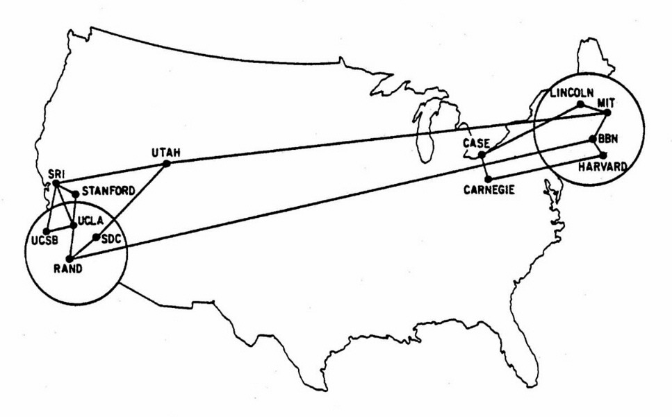
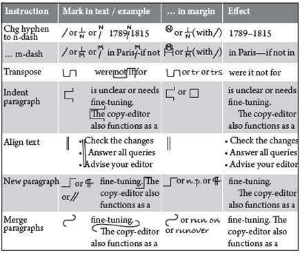

Dwight Eisenhower - American politician and Army general who served as the 34th President of the United States from 1953 until 1961.
Sputnik, the first artificial satellite launched into space.


ARPA (Advanced Research Project Agency), later known as DARPA (Defense Advanced Research Projects Agency).

“The Internet as we know it really got started in the early 1960s. That was when J.C.R. Licklider — a computer scientist with technology company Bolt, Beranek and Newman (BBN) — formulated a few unique ideas about global networking in a series of memos, describing an 'Intergalactic Computer Network.' His idea: link computers together across the globe; and anybody near a computer could share information. As it turns out, Licklider had the right idea at the right time. The Cold War had the United States searching for a communication network that could survive a nuclear attack.”
LiveScience.com Tim Berners-Lee developed the first HTML (Hypertext Markup Language) in 1989.

Published text has always been marked up so that the author and publisher could synchronize and lay out a publication the way it was envisioned. Tim Berners-Lee created a markup language that tells a web browser how to visually display a page as the “author” intended.
Marc Andreessen added an image tag to HTML and founded Netscape in 1993.

During the 1990s, there were browser wars and HTML was becoming fragmented. Tim Berners-Lee created the W3C (World Wide Web Consortium) to maintain HTML standards. Visit: w3.org

Versions of HTML:
HTML 3.2 - 1997
HTML 4.01 - 1999
XHTML - 2000
HTML5 - 2014

There have been many versions of HTML. We are currently in HTML5, and many people don’t see a sixth version coming anytime soon, if ever.